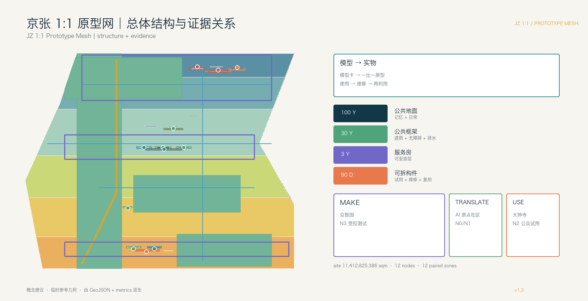
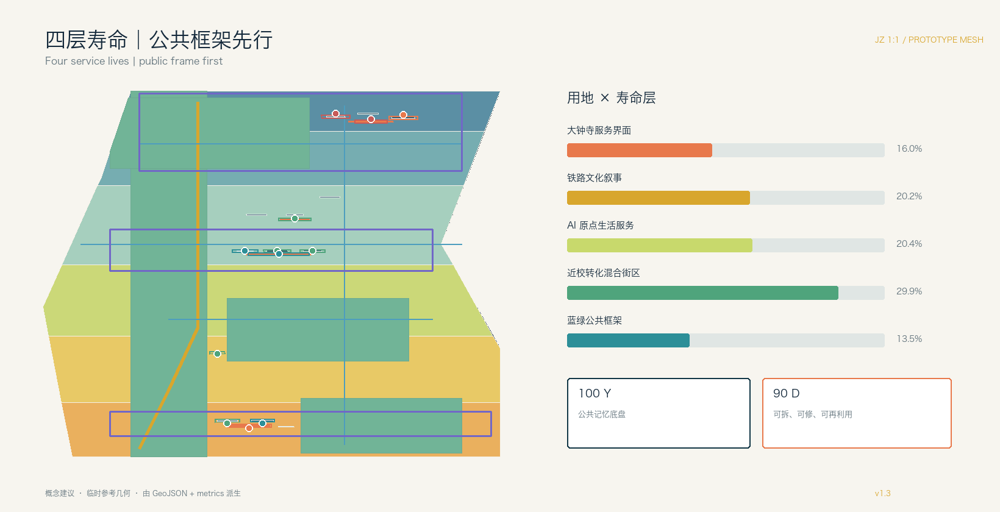
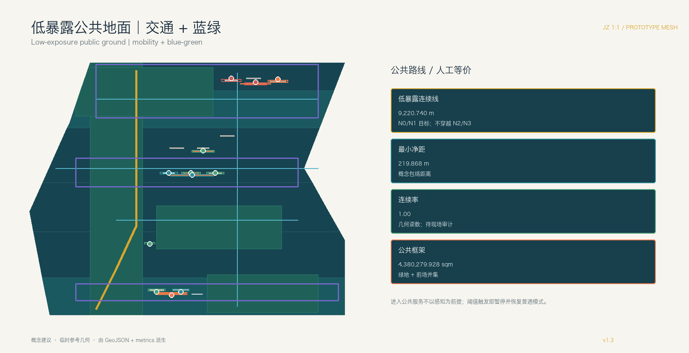

总览地图与核心指标
总览地图、用地分区、建筑、交通慢行、蓝绿公共空间和更新项目均由同一组 GeoJSON 派生。

三层范围与四层寿命
三层范围把统筹研究、总体设计和重点区域落实为长寿命公共地面、公共框架、服务房与可拆构件。
公共框架
遮荫 + 无障碍 + 排水 + 照明服务房
可变首层 + 人工窗口可拆构件
试用 + 维修 + 复用 + 退役重点区域 / MAKE → TRANSLATE → USE
三处重点区域角色不同，但共享原型护照和感知地籍字段。
众智园
- 原型房与原型院
- 材料护照
- N3 受控测试
AI 原点社区
- 可变服务房
- 人工与离线窗口
- N0/N1 低暴露
大钟寺
- 采用门廊
- 维修再利用台
- N2 可见公众试用
用地分区、交通慢行与蓝绿公共空间
建筑和道路几何仍为概念建议；权属、控规、红线、市政、文保、消防与防洪待正式资料。


AI 感知地籍
每个原型节点登记感知、时段、留存、人工交接、遮罩、到期和普通人工/离线等价服务。
| ID | 原型角色 | 等级 | 时段 | 留存 | 人工交接 |
|---|---|---|---|---|---|
| NODE-001 | park_review_face | N1 | 08:00-20:00 | none | human_culture_review |
| NODE-002 | offline_service_room | N0 | offline_only | none | service_desk |
| NODE-003 | translation_room | N1 | 09:00-18:00 | none | ip_service_reviewer |
| NODE-004 | prototype_room | N3 | 09:00-17:00 | event_log_30d | safety_reviewer |
| NODE-005 | interface_box | N1 | 09:00-18:00 | aggregate_24h | energy_operator |
| NODE-006 | public_feedback_desk | N2 | event_only | event_log_7d | public_operations_team |
| NODE-007 | prototype_passport_counter | N3 | 09:00-17:00 | event_log_30d | accessibility_reviewer |
| NODE-008 | offline_human_service_porch | N0 | offline_only | none | human_service_desk |
| NODE-009 | adoption_retirement_desk | N2 | 10:00-20:00 | aggregate_24h | venue_operator |
| NODE-010 | repair_reuse_workbench | N0 | maintenance_only | none | maintenance_team |
| NODE-011 | ninety_day_public_segment | N1 | 07:00-22:00 | aggregate_24h | mobility_reviewer |
| NODE-012 | long_life_frame_interface_box | N1 | event_only | aggregate_24h | park_operator |
| ZONE-001 | N1 | 08:00-20:00 | none | human_culture_review | |
| ZONE-002 | N0 | offline_only | none | service_desk | |
| ZONE-003 | N1 | 09:00-18:00 | none | ip_service_reviewer | |
| ZONE-004 | N3 | 09:00-17:00 | event_log_30d | safety_reviewer | |
| ZONE-005 | N1 | 09:00-18:00 | aggregate_24h | energy_operator | |
| ZONE-006 | N2 | event_only | event_log_7d | public_operations_team | |
| ZONE-007 | N3 | 09:00-17:00 | event_log_30d | accessibility_reviewer | |
| ZONE-008 | N0 | offline_only | none | human_service_desk | |
| ZONE-009 | N2 | 10:00-20:00 | aggregate_24h | venue_operator | |
| ZONE-010 | N0 | maintenance_only | none | maintenance_team | |
| ZONE-011 | N1 | 07:00-22:00 | aggregate_24h | mobility_reviewer | |
| ZONE-012 | N1 | event_only | aggregate_24h | park_operator |
AI 场景
12 张卡把空间、数据边界、运营主体、非 AI 等价、停机阈值与退役路径连成一体。
无障碍多语言导视
MAKE / N3
可调公共家具
MAKE / passport
离线服务界面
MAKE → TRANSLATE
近校成果转译房
TRANSLATE / N1
社区照护导航
human + offline
共享制作课程
3-year room
站前终端采用试用
USE / N2
维修再利用台账
USE / N0
铁路文化导览
rights-cleared
AI 慢行诊断
field retest
低速服务设备
human takeover
公共韧性提示
aggregate only
任务覆盖与自检状态
任务覆盖公告 1.3、1.4、1.5、agent.1—agent.6、强制标准和 15 项设计深度。
来源
官方公告、清权任务书、仓库来源登记、标准快照与临时边界文件。
sources.json / standard_matrix.json假设
正式几何、权属、控规、建筑普查、交通、市政、文保、消防、防洪与运营资料待补。
assumptions.json / design_depth_matrix.json自检状态
最终编辑后重新运行确定性、空间、视觉、专业、双语和 manifest 校验。
self_check.json / compliance_matrix.json